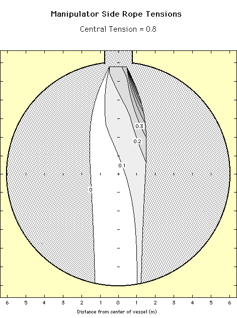

Calibration Manipulator
Software
Calibration Manipulator
Software
Side Rope Tensions
The plot below show the tension on the right side control rope as a
function of position for a central rope tension of 80% of the source weight.
The tensions are plotted as a fraction of the source weight. These calculations
do not include the effects of an umbilical.
Choose plots with different central tensions: 0% - 10% - 20% - 30% - 40% - 50% - 60% - 70% - 80% - 90%
